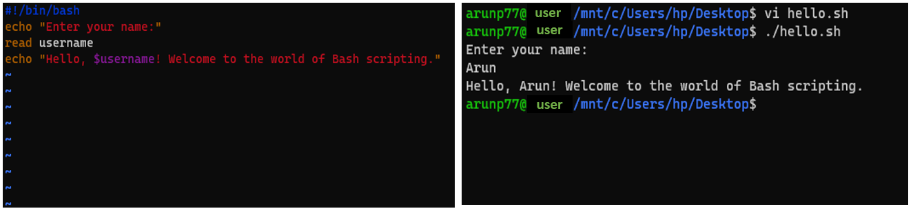

Linux, with its open-source nature, has become an essential skill for data professionals. Whether you're an aspiring data scientist, analyst, or data engineer, a solid understanding of Linux can greatly enhance your capabilities.
Here, we will embark on a journey to master Linux, covering everything from basic commands to advanced topics relevant to the data world.
Chapter-1: Getting Started with Linux
Linux, born out of the vision of Linus Torvalds in 1991, has evolved into a powerful, open-source operating system widely used in various industries.
Understanding its history and significance sets the stage for harnessing its potential in the data-centric world.
Linux's journey began as a personal project by Linus Torvalds, a Finnish student, who aimed to create a free and open-source alternative to Unix.
Over the years, a collaborative effort by developers worldwide transformed Linux into a robust, community-driven OS. Its stability, security, and scalability have made it a cornerstone in server environments and, increasingly, a go-to for data professionals.
Significance of Linux in Data Science:
Linux's role in data-related fields cannot be overstated. Its open-source nature allows for customization, making it an ideal platform for handling vast datasets, running analytical processes, and managing data infrastructure. From data scientists running
analyses to data engineers orchestrating workflows, Linux provides a stable and efficient environment.
Choosing the Right Distribution:
Linux comes in various distributions, each tailored for specific use cases. The choice of distribution depends on factors like user preferences, system requirements, and intended applications. Common distributions include:
Ubuntu: User-friendly and widely used, suitable for beginners.
CentOS: Known for stability, often preferred for server environments.
Arch Linux: Favored by enthusiasts for its minimalistic approach.
Choose your distribution:
Among the plethora of Linux distributions, Ubuntu stands out for its user-friendly interface,
extensive community support, and wide adoption. Particularly suitable for beginners, Ubuntu simplifies the transition to
Linux without compromising functionality. Ubuntu is a Linux distribution or operating system based on the Linux kernel.
About UBUNTU: Ubuntu is built upon the Debian architecture, inheriting its stability and package management system.
Debian refers to an operating system or distribution that is built upon the Debian Linux distribution. Debian is one of the oldest and most influential Linux distributions, known for its commitment to free and open-source software principles.
Debian package files typically have the extension .deb.
Many other Linux distributions, including Ubuntu, are derived from Debian.
Versions: Ubuntu has two types of releases - Long Term Support (LTS) and regular releases. LTS versions are supported for five years, providing a stable platform, while regular releases are supported for nine months and include the latest features.
Desktop Environments:
Unity (discontinued): Historically, Ubuntu used the Unity desktop environment. However, starting from version 17.04, Ubuntu switched back to GNOME as its default desktop environment.
GNOME: The default desktop environment for Ubuntu since version 17.04, known for its simplicity and flexibility.
Package Management: Ubuntu uses APT (Advanced Package Tool) for package management. It simplifies the process of installing, updating, and removing software packages.
The apt command is a powerful command-line tool, which works with Ubuntu’s Advanced Packaging Tool (APT). Some examples of popular uses for the apt is:
sudo apt upgrade
Software Center: A user-friendly graphical interface for managing software on Ubuntu. Users can browse and install applications with ease.
Community and Support:Ubuntu has a vast and active user community. Online forums, documentation, and community-driven support contribute to its accessibility for users of all levels.
Server Edition: Apart from the desktop edition, Ubuntu offers a server edition that is widely used for server deployments. It includes features like the Landscape server management tool and optimized server packages.
Cloud Integration: Ubuntu is a popular choice for cloud computing. It is supported on major cloud platforms, including AWS, Google Cloud Platform (GCP), and Microsoft Azure.
Snap PackagesUbuntu introduced the Snap packaging system, allowing developers to package their applications with all dependencies included. This provides a more isolated and secure environment for applications. This package is just like Docker containerization.
Similarities
Aspect
Ubuntu Snap Packages
Docker
Containerization
✔
✔
Cross-Platform Compatibility
✔
✔
Isolation
✔
✔
Ease of Deployment
✔
✔
Versioning
✔
✔
Differences
Packaging Format
Self-contained Snap package
Layered file system approach
Application Lifecycle
User-friendly, automatic updates
Emphasis on entire application stack
Use Cases
Desktop, server, IoT applications
DevOps, microservices
Ecosystem
Ubuntu-centric
Widely adopted across Linux distributions, broader industry support
Container Orchestration
Not designed for large-scale orchestration
Docker Swarm, Kubernetes support
Security: Ubuntu employs AppArmor, a Linux kernel security module, to restrict programs' capabilities to enhance system security.
Commonly used linux commands:
Command
Description
ls
List files and directories in the current directory.
cd
Change the current directory.
pwd
Print the current working directory.
cp
Copy files or directories.
mv
Move or rename files or directories.
rm
Remove (delete) files or directories.
mkdir
Create a new directory.
rmdir
Remove an empty directory.
touch
Create an empty file.
nano
Open the Nano text editor.
cat
Display the contents of a file.
chmod
Change file permissions.
chown
Change file ownership.
ps
Display information about running processes.
kill
Send a signal to a process, terminating it.
df
Display disk space usage.
du
Display file and directory space usage.
top
Display and manage system processes in real-time.
apt
Advanced Package Tool for managing software packages.
Visit the official Ubuntu website and download the ISO file corresponding to your system architecture.
Create a Bootable USB: Creating a bootable USB is a crucial step when installing an operating system like Ubuntu. A bootable USB serves as the
installation medium for the Linux operating system. The USB drive contains the necessary files and system images required to initiate and complete the installation
process on your computer. Here how you can create a bootbale USB for Ubuntu from Linux, MacOS and windows:
On a Linux system: Insert the USB drive into your linux system and then Open the terminal. Find the name
of the USB drive (if not known) by using lsblk or fdisk -l and then
use following command
Make sure to replace /path/to/ubuntu.iso with the actual path to your Ubuntu ISO file, and /dev/sdX with the correct device name of your USB drive.
MacOS:
Insert your USB drive into the Mac. Open Terminal. Identify the USB drive using the command diskutil list. Next Unmount the USB drive with using
diskutil unmountDisk /dev/diskX
(replace the /dev/diskX with the identifier of your USB drive) and then use following command in ther terminal to copy the UBUNTU ISO to the USB drive:
List files and directories in the current directory
ls
List files with details.
ls -l
List hidden files.
ls -a
Change directory to a specific path
cd /path/to/directory
Move up one directory
cd ..
Move to the home directory
cd ~
Move to the previous directory
cd -
Navigate to the Root Directory
cd /
Navigate to the User's Home Directory
cd
Go Back Multiple Directories
cd ../..
Go to a Specific User's Home Directory
cd ~username
Display the Contents of a File
cat filename
Display the First Few Lines of a File:
head filename
Display the Last Few Lines of a File
tail filename
Display the Contents of a File Page by Page
less filename
Copy Files or Directories
cp source destination
Move or Rename Files or Directories
mv source destination
Remove/Delete Files
rm filename
Remove/Delete Directory and its Contents
rm -r directory
Create an Empty File
touch filename
Display the Manual (Help) for a Command
man command
Create a Symbolic Link (Soft Link)
ln -s source_link destination_link
Create a new directory
mkdir new_directory
Remove a directory
rmdir existing_directory
Chapter-3: Understanding the File System
The file system is a crucial component of any operating system. It organizes and manages files and directories, providing a structured way to store and retrieve data. Here are some fundamental concepts:
The file system is organized into a hierarchical structure with directories (folders) and files. Each directory can contain files and subdirectories, creating a tree-like structure.
Path Notation
Paths are used to specify the location of a file or directory. Absolute paths start from the root directory ("/" in Unix-like systems), while relative paths are relative to the current working directory.
Common Directories
Several standard directories have specific purposes:
/: The root directory.
/home: Home directories for users.
/bin: Essential command binaries.
/etc: System configuration files.
/var: Variable data, such as logs and spool files.
/tmp: Temporary files.
File Permissions
Files and directories have associated permissions, specifying who can read, write, or execute them. Permissions are represented in a symbolic or numeric notation.
File Types
Files can be of various types, including regular files, directories, symbolic links, and device files. The file command can be used to determine the file type.
# Example: Using the file command
file filename
Understanding these concepts is essential for effective navigation and management of the file system in the terminal.
Chapter-4: Package Management in Linux
Here are some of the key package managers used in Ubuntu:
APT (Advanced Package Tool):
Description: APT is the default package management system for Ubuntu and many other Debian-based distributions.
Usage: Commands like apt-get and apt are used for installing, updating, and removing packages.
Advantages: APT resolves dependencies automatically, making software management more straightforward. It also provides a clean and consistent way to interact with packages.
dpkg:
Description: While not a package manager per se, dpkg is the underlying tool that APT uses to install, remove, and manage packages.
Usage: Directly interacts with Debian package files (*.deb). Commands like dpkg -i are used for manual package installation.
Advantages: Allows for low-level package management, useful for troubleshooting or installing packages directly.
Snap:
Description: Snap is a containerized package management system that includes the application and its dependencies in a single package.
Usage: Commands like snap install are used to install Snap packages.
Advantages: Snaps are isolated from the system, reducing potential conflicts between packages. They also provide more up-to-date versions of certain software.
Flatpak
Description: Similar to Snap, Flatpak is a universal package manager that allows for the distribution of applications across different Linux distributions.
Usage: Commands like flatpak install are used for managing Flatpak packages.
Advantages: Offers sandboxing for applications, improving security. Flatpak provides a consistent environment across different Linux distributions.
Synaptic Package Manager
Description: Synaptic is a graphical package management tool that utilizes APT for package operations.
Usage: Offers a user-friendly interface for installing, updating, and removing packages.
Advantages: Useful for those who prefer a graphical interface over command-line interactions. It provides more detailed package information and a visual representation of package relationships.
Aptitude
Description: Aptitude is a text-based package manager that works on top of APT.
Usage: Commands like aptitude install are used for managing packages.
Advantages: Provides a more user-friendly, interactive interface for package management. It includes features like searching, filtering, and dependency resolution.
Chapter-5: User Management
In this chapter, we will delve into creating and managing users effectively, as well as understanding user permissions and group management.
Creating Users:
sudo adduser new_username
Follow the prompts to set a password and provide additional user details.
Managing Users: Listing Users:
cat /etc/passwd
Modifying User Propertie:
sudo usermod -l new_username old_username
Deleting a User
sudo userdel username
User Permissions: Assigning Permissions using chmod: (For instance, to give read, write, and execute permissions to the user)
chmod u+rwx file_name
Viewing Permissions (Check current permissions with the ls command):
ls -l file_name
Group Management: Groups allow efficient permission management by grouping users with similar access requirements.
Creating a Group: Use the addgroup command to create a new group.
sudo addgroup new_group
Adding Users to a Group: The usermod command helps add users to groups.
sudo usermod -aG group_name username
Viewing Group Details: Check group details with the getent command.
getent group
Chapter-6: Processes and Services
Monitoring Processes Efficiently:
top Command: Ubuntu provides the top command to monitor running processes in real-time. By typing top in the terminal, you get a dynamic view of processes, their resource usage, and other system information. You can sort processes based on CPU or memory usage to identify bottlenecks.
ps Command: The ps command is another powerful tool to display detailed information about processes. For example, ps aux shows a comprehensive list of all processes running on the system, including their resource utilization.
htop command: Consider installing htop for a more user-friendly and interactive process monitoring experience. It provides a visual representation of processes, their resource consumption, and allows for easy navigation.
Managing Processes:
kill Command: To terminate a process, you can use the kill command. For example, kill 'PID' will end the process with the specified process ID.
pkill Command: If you want to kill a process by its name, you can use pkill. For instance, pkill firefox will terminate all processes associated with Firefox.
killall Command: Similar to pkill, killall terminates processes by name. For example, killall gnome-terminal will close all open terminal windows.
Managing Services:
systemctl Command: Ubuntu uses systemctl to control system services. You can start, stop, restart, and check the status of services using commands like sudo systemctl start 'service', sudo systemctl stop 'service', sudo systemctl restart 'service', and sudo systemctl status 'service'.
service Command: The traditional service command is also available. For instance, sudo service apache2 restart will restart the Apache web server.
Enable and Disable Services: Use sudo systemctl enable to enable a service to start on boot and sudo systemctl disable to disable it...
Checking Service Logs: Logs are crucial for troubleshooting. Utilize journalctl to view detailed logs for a specific service...
Chapter-7: Networking Essentials
Grasping the Basics:
Network Configuration Files: Ubuntu uses configuration files like /etc/network/interfaces for static IP addresses and /etc/netplan/ for dynamic configurations. Learn how to navigate and edit these files to set up your network.
IP Addressing: Grasp the fundamentals of IP addressing, subnetting, and the concept of localhost (127.0.0.1). Understand how to assign static IPs or use DHCP for dynamic assignments.
Network Interfaces: Explore the different network interfaces on your Ubuntu system. The primary interface is often named 'eth0' for Ethernet connections, but it can vary. Learn how to identify and configure these interfaces.
Configuring Network Settings:
Command Line Configuration: Ubuntu provides command-line tools like ifconfig and ip for quick network configuration. Dive into these commands to set IP addresses, configure routes, and manage network interfaces.
Netplan for Dynamic Configuration: Ubuntu has adopted Netplan as the default network configuration tool. Understand the YAML syntax used in Netplan configuration files (/etc/netplan/*.yaml) and leverage it for dynamic network setups.
Network Manager GUI: Ubuntu offers a user-friendly Network Manager GUI. Explore its features for easy point-and-click network configuration. Learn to set up wired or wireless connections, VPNs, and manage network profiles.
Troubleshooting Common Issues:
Checking Connectivity: Use commands like ping and traceroute to check connectivity to other devices or websites. Understand how to interpret the results and troubleshoot issues.
Reviewing Logs: Dive into system logs (/var/log/syslog, /var/log/dmesg) to identify and troubleshoot network-related problems. Learn to use tools like journalctl to streamline log analysis.
Firewall Configuration: Ubuntu comes with the Uncomplicated Firewall (UFW). Understand how to configure UFW to allow or deny specific network traffic. Learn to open ports for services and applications.
Chapter-8: Shell Scripting for Automation
Bash scripting is a powerful tool that can significantly enhance your productivity on Ubuntu. As a data professional, automating repetitive tasks through scripting not only saves time but also ensures consistency in your processes. In this chapter, we'll explore the basics of Bash scripting and guide you through writing simple scripts tailored for automating common tasks.
Understanding Bash Scripting: Bash (Bourne Again SHell) is the default shell for Ubuntu, providing a command-line interface to interact with the operating system. Bash scripting allows you to automate sequences of commands, making it a valuable skill for streamlining tasks.
Writing Your First Script: Let's start by creating a simple "Hello World" script to get familiar with the basics. Open a text editor on Ubuntu, such as Nano or Vim, and create a new file, for example, hello.sh. Add the following lines:
#!/bin/bash
echo "Hello, World!"
Save the file and exit the text editor. Make the script executable by running:
chmod +x hello.sh
Now, you can execute your script:
./hello.sh
Congratulations! You've just written and executed your first Bash script.
Variables and Input: Bash allows you to use variables to store and manipulate data. Let's enhance our script to take input from the user:
#!/bin/bash
echo "Enter your name:"
read username
echo "Hello, $username! Welcome to the world of Bash scripting."

Conditional Statements: Bash supports conditional statements for decision-making in scripts. For example, let's create a script that checks if a number is even or odd:
#!/bin/bash
echo "Enter a number:"
read num
if [ $((num % 2)) -eq 0 ]; then
echo "$num is even."
else
echo "$num is odd."
fi
Once you run the file 'hello.sh' using ./hello.sh, it will ask a number (lets suppose it is 12). If number is even then it will give 12 is even.
Looping Constructs: For automating repetitive tasks, loops are crucial. Consider a script that prints numbers from 1 to 5:
#!/bin/bash
for i in {1..5}; do
echo $i
done
Run the script to observe how it iterates through the loop, printing numbers from 1 to 5.
File Backup Script:
Create a script that automatically backs up specified files or directories to a backup folder.
#!/bin/bash
backup_dir="backup_folder" # Defines the name of the backup directory
source_dir="source_folder" # Defines the name of the source directory
mkdir -p $backup_dir # Creates the backup directory if it doesn't exist
cp -r $source_dir/* $backup_dir/ # Copies all files from the source directory to the backup directory recursively
echo "Backup completed successfully!" # Prints a message indicating that the backup process is completed
This script creates a backup folder if it doesn't exist and copies the contents of the source folder into it.
Data Processing Script:
Suppose you have a set of CSV files, and you want to concatenate them into a single file for analysis.
This script retrieves and displays information about the system, including hostname, CPU, memory, and disk space.
#!/bin/bash
# Set the URL for data download
data_url="https://api.example.com/data_endpoint"
# Set the output file names
raw_data_file="raw_data.json"
transformed_data_file="transformed_data.csv"
# Step 1: Download Data from API
wget $data_url -O $raw_data_file
# Step 2: Transform Data (Example using jq)
# Modify this section based on your actual data transformation needs
cat $raw_data_file | jq '.data | map({timestamp: .timestamp, value: .data_field})' > $transformed_data_file
# Step 3: Data Analytics (Example using Python and pandas)
python3 << EOF
#here there should not be space between << and EOF as when it is written here comment all lines afterward.
import pandas as pd
import matplotlib.pyplot as plt
# Read transformed data into a pandas DataFrame
data = pd.read_csv("$transformed_data_file")
# Time Series Plot
plt.figure(figsize=(10, 6))
plt.plot(data['timestamp'], data['value'], label='Data Value')
plt.title('Time Series Plot')
plt.xlabel('Timestamp')
plt.ylabel('Value')
plt.legend()
plt.savefig('time_series_plot.png')
plt.close()
# Additional Relevant Plots and Analytics
# Add your specific data analytics and plots here
EOF
# Step 4: Cleanup (Optional)
# Uncomment the line below if you want to delete the raw data file after processing
# rm $raw_data_file
echo "Data analytics completed successfully. Plots saved as time_series_plot.png and others as needed."
Chapter-9: Securing Your Linux System
In this chapter, we will delve into the crucial aspects of securing your Ubuntu Linux system, ensuring a robust and protected environment for your data endeavors. Implementing the best practices outlined here will not only safeguard your system but also contribute to the overall integrity of your data.
Setting Up a Firewall:
Introduction to UFW: Uncomplicated Firewall (UFW) is a user-friendly interface for managing iptables, the default firewall management tool for Ubuntu.
Basic Configuration: Learn how to enable UFW, allow and deny specific traffic, and create custom rules.
Monitoring and Logging: Explore techniques to monitor firewall activity and set up logging for analysis.
User Authentication:
Password Policies: Establish strong password policies to enhance user authentication security.
SSH Security: Secure the Secure Shell (SSH) protocol by configuring key-based authentication and disabling password-based login.
User Privileges: Understand and implement the principle of least privilege, granting users only the necessary permissions.
Overall System Security:
Regular Updates: Emphasize the importance of keeping the system up-to-date with the latest security patches and updates.
Antivirus Measures: Although Linux is less susceptible to viruses, implementing antivirus tools can add an extra layer of security.
File System Encryption: Explore options for encrypting sensitive data at rest to protect against unauthorized access.
Monitoring and Auditing:
System Logs: Utilize system logs to monitor and audit system activity.
Intrusion Detection Systems (IDS): Implement IDS tools to detect and respond to potential security threats.
Regular Audits: Conduct routine security audits to identify vulnerabilities and address them proactively.
Network Security:
Network Segmentation: Implement network segmentation to isolate and protect critical components.
VPN Setup: Explore setting up a Virtual Private Network (VPN) for secure remote access
Security Certificates: Use SSL/TLS certificates for encrypted communication over the network.
Chapter-10: Advanced Linux Topics
Section 1: Linux in Server Environments
In this section, we will delve into the use of Ubuntu in server environments. Ubuntu Server is a popular choice for hosting applications and services due to its stability, security features, and ease of administration. We'll cover:
Installation and Configuration: Walkthrough of installing Ubuntu Server and basic configurations.
Server Administration: Managing services, users, and permissions on a server.
Web Server Setup: Configuring a web server (e.g., Apache or Nginx) to host websites or web.
Section 2: Linux's Role in Cloud Environments
Linux, especially Ubuntu, plays a pivotal role in cloud computing. We'll explore its integration with major cloud service providers like AWS, Azure, and Google Cloud Platform (GCP). Topics include:
Creating Virtual Machines (VMs): Launching Ubuntu instances in the cloud.
Cloud Storage Integration: Using cloud storage solutions for data management.
Networking in the Cloud: Configuring networks and security groups in a cloud environment.
Section 3: Integration with Data-Related Tasks
Linux in the cloud is indispensable for data professionals. We'll discuss how Ubuntu facilitates various data-related tasks in a cloud setting:
Data Processing: Leveraging Linux for data processing tasks using tools like Apache Hadoop or Spark.
Database Management: Setting up and managing databases (e.g., MySQL, PostgreSQL) on Ubuntu in the cloud.
Containerization with Docker: Exploring how Linux supports containerization for efficient deployment and scaling.
Chapter-11: Some common useful Linux commands
Name
Command
Description
find
find /path/to/search -name "*.txt" -type f
Search for files and directories based on criteria.
grep
grep "pattern" filename
Search for patterns in files or command output.
awk
awk '{print $1}' filename
Powerful text processing tool for data extraction.
sed
sed 's/old-text/new-text/' filename
Stream editor for text filtering and transformation.
rsync
rsync -av source/ destination/
Efficiently synchronize files and directories between two locations.
tar
tar -cvzf archive.tar.gz /path/to/directory
Create, compress, or extract archive files.
curl
curl -O https://example.com/file.txt
Transfer data to or from a server using various protocols (HTTP, FTP, etc.).
wget
wget https://example.com/file.zip
Retrieve files from the internet using HTTP, HTTPS, or FTP.
ps
ps aux | grep process_name
Display information about active processes.
kill
kill -9 process_id
Terminate a process by sending a signal.
lsof
lsof /path/to/file
List open files and processes that opened them.
netstat
netstat -tulpn
Display network-related information such as open ports and connections.
iptables
Configure the Linux kernel firewall.
sudo iptables -A INPUT -p tcp --dport 22 -j ACCEPT
systemctl
systemctl status service_name
Control the systemd system and service manager.
journalctl
journalctl -xe
Query and display messages from the journal, managed by systemd
Run a command or interactive shell with a different root directory.
nice and renice
nice -n 10 command
renice +5 -p process_id
Set or adjust the priority of a process.
screen and tmux
screen
tmux
Terminal multiplexers that allow multiple sessions in a single terminal.
at and cron
at now + 1 hour
crontab -e
Schedule tasks to run at a specific time using at, or periodically using cron.
Conclusion
In conclusion, my Linux adventure has been nothing short of transformative. From mastering the intricacies of the terminal to exploring advanced topics like cloud integration, Ubuntu has proven to be a powerful ally in my data-centric journey. The open-source nature of Linux, coupled with its stability and versatility, has not only fortified my understanding of operating systems but has also opened doors to a realm of possibilities in data science and analytics. As I navigate the ever-evolving landscape of technology, my proficiency in Linux stands as a testament to the invaluable skills gained on this adventure. Excited for the continued exploration and application of Linux in shaping the future of data-driven endeavors.